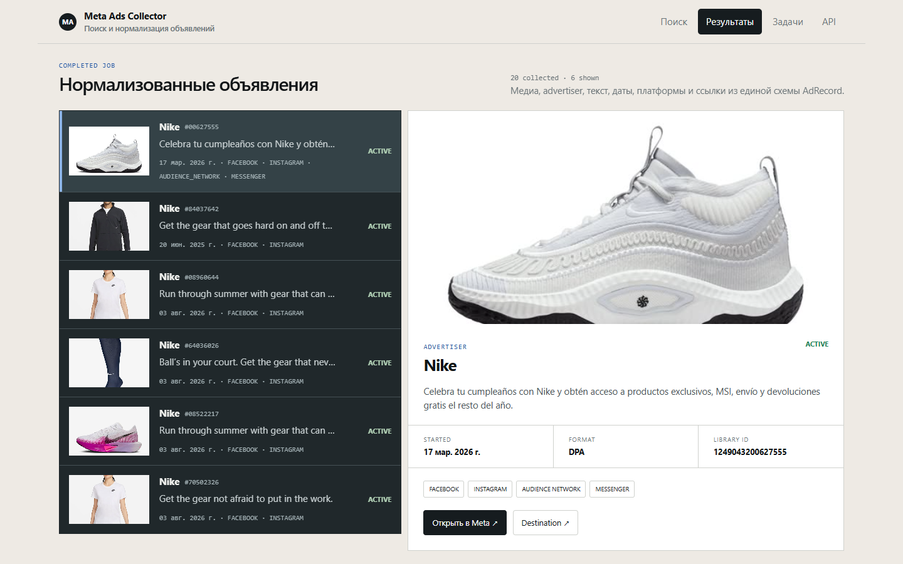
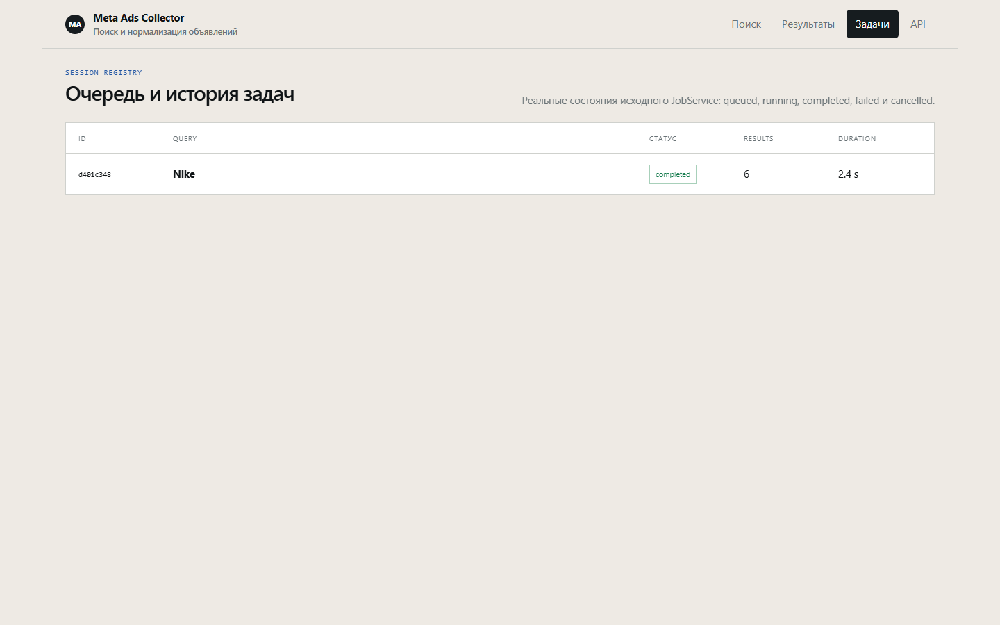
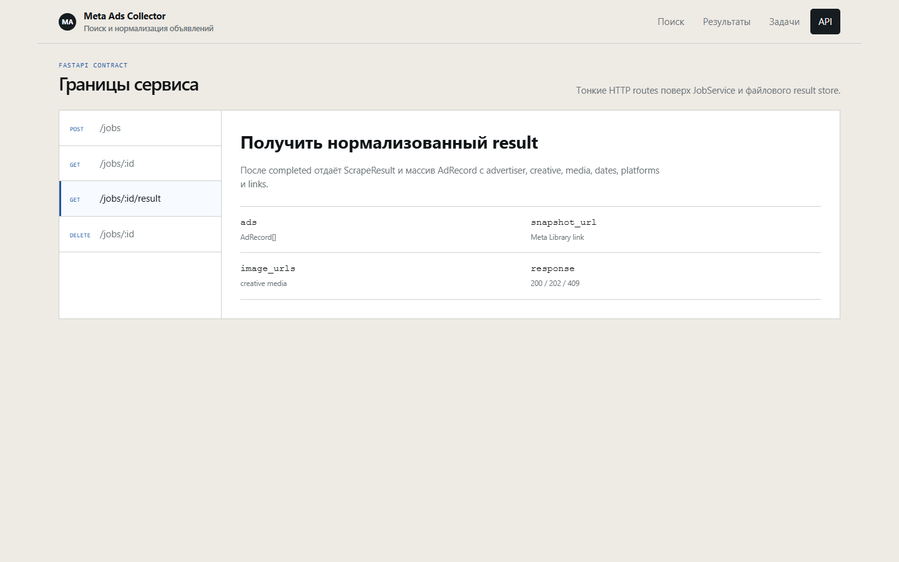

Search → queue → normalized ads → creative detail. Исходный live run дал 40 объявлений; демонстрационная архивная выборка содержит 20, из которых шесть показаны в интерфейсе. Статус объявлений сохранён на момент сбора. Внешний upstream в видео заменён безопасным replay.
Output / verified replay
Объявления, креативы и данные

Portfolio UI поверх реального API-контракта; данные из локального подтверждённого результата.

Задача и результат обработки
Контракт исходного API